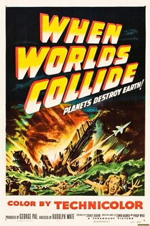
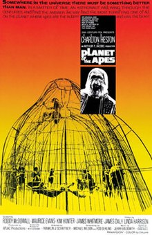
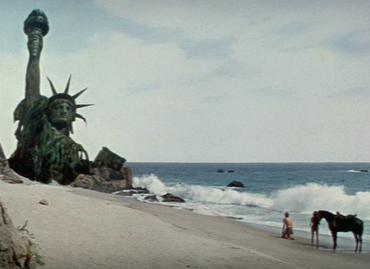
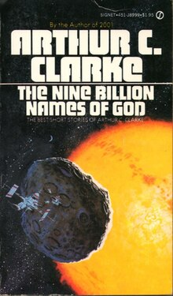
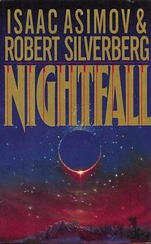
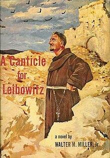

Course: Science Fiction & Religion
Lecture #11: Apocalypse I
VISIONS OF THE END OF THE WORLD IN SCIENCE FICTION
The general name given to the end of the world comes from the Greek word meaning to uncover or reveal. The word, APOCYLYPSE (REVELATION) OR APOCALYPTIC has the idea of a prophetic forecasting of the ultimate destiny of the world.
Science fiction as well as the Bible, deal in these ideas of the end. In the Bible, the books of Daniel and Revelation are the pre-eminent examples of apocalyptic thought.
In science fiction, especially since the beginning of the atomic age, these ideas have been considered a great deal. Up until recently the world has been seen as ending in an atomic holocaust.
Stories like Dr. Strangelove (or How I learned to stop worrying and love the bomb) have the mad general who tries to begin World War III.
The idea of being hit by stuff from space, such as asteroids, (Without Warning, or When Worlds Collide).
Stories in which Humans evolve beyond the material form and actually advance (Childhoods End).
Stories in the newer science fiction, such as David Brins EARTH and the new TV series Earth II, see the end of the Earth as we know it due to pollution of the air and water.
DISCUSS: “Night Fall" first (p. 4)
My intention here is to show a few clips from movies dealing with the end of life on Earth as we know it and then deal with two of the best books concerning the apocalypse, A Canticle for Liebowitz by Arthur Miller, Jr. and Childhoods End by A.C. Clark
I will do the film clips more or less chronologically.

WHEN WORLDS COLLIDE is based on a preatomic age book of that title and will look almost 30ish, though the movie was made by George Pal in 1951. He won an academy award for special effects that year for the flooding of Manhattan Island.
Scientists discover that an asteroid is on a collision course with Earth. There is only enough time to complete one rocket which can carry only 40 people who are chosen by a raffle. As the asteroid approaches, many of the losers panic and try to take the ship. It blasts off heading for a new planet where life will begin anew.
SHOW: Here is the final moments.- @ 8 min
DR. STRANGELOVE a British, 1964 release with Peter Sellers playing multiple parts. Basically a mad general sends 34 planes to bomb the USSR and then it is revealed that the Russians have a DOOMSDAY MACHINE which if any bombs fall will begin a world wipe out.
The planes are recalled. 30 come back, 4 have been hit by the russians and are believed down, but it turns out one is left flying into Russia damaged so it can't here the recall. There is a great conversation between the US pres. (Peter Sellers) and the Russian premier (Kissoff). Slim Pickens in a classic scene, rides the bomb into destiny. Here is the edited final scenes.
SHOW Final Scene – 6 min

PLANET OF THE APES 1968 w/ Charlton Heston and Roddy McDowell. Astronaut leaves Earth with crew. They crash-land on what they believe to be another planet. Apes are the rulers and humans are slaves. After a great deal of intrigue, the astronaut and one woman are freed by the scientist apes and taken to a cave where they are uncovering artifacts of humans dating from about 2000 years before. After a battle, the man and woman are freed and ride off on their horse where they make an astonishing discovery.

SHOW -- edited final scenes – 9 min

HITCHHIKERS GUIDE TO THE GALAXY by Douglas Adams, 1979ff, BBC
Arthur Dent wakes to find his house is about to be bulldozed to make way for a new thoroughfare. He lies in front of the bulldozer to stop it. Along comes Ford Prefect, a resident of a small planet near Betelgeuse, a star some distance away, but a resident of earth for the past several years. He is the researcher for a massive work called "hitchhikers Guide to the Galaxy." He tells Arthur it won't matter if his house is bulldozed as the Earth is going to end in 12 minutes. They go to the bar and drink a lot as Ford says Arthur needs to be relaxed when going thru hyperspace. The Vogans appear over Earth and inform Earthlings what is happening. Here is that segment from the BBC television series.
- SHOW Ep 1, Scene 4 / 6 min
NOTE: Highlighted section is “Additional Material – Read only if Time & Interest Permit
Nine Billion Names of God
By Arthur C. Clark
The Nine Billion Names of God - Wikipedia

The Nine Billion Names of God is a famous 1953 short story by Arthur C. Clarke; the phrase also appears in the title of a collection of Clarke's short stories, The Nine Billion Names of God: The Best Short Stories of Arthur C. Clarke (1967).
It was the winner (in 2004) of the retrospective Hugo Award for Best Short Story for the year 1954.
What are the nine billion names of God. This is an oblique reference to The Kabbalistic Theory that every word in the original Hebrew Scriptures can be re-arranged to form a name of God, and time will 3nd when the true name of God is reformed from the letters scattered about the sacred text.
Summary
A very short story tells of a Buddhist monastery whose monks have long sought to discover the one true name of God. The monks create a writing system in which, they calculate, they can encode all possible names of God in no more than nine characters, with the same character not repeated more than three times consecutively.
They purchase a computer capable of printing all the possible permutations, and they hire two Westerners to install and program the machine. The computer operators are skeptical, but the monks believe that when the computer has printed all the names, existence will lose all meaning, and God will "wind up" the universe.
The operators engage the computer, and when it has printed the final name, we find that "overhead, without any fuss, the stars were going out."

NIGHTFALL
by Isaac Asimov, 1941
"Nightfall" is the story that made Asimov a science fiction writer to be noted, though he had published other things before this. Many believe it was his best, though he would like to think he had developed better writing over the years.
A reporter, Theremon 762, goes to interview Aton 77, an astronomer and director of Saro University. Aton is not happy with the reporter sent to cover that day’s events.
This planet, Lagash, has six suns, the brightest of which is setting. With only one left to set, four hours remain before it is truly dark and, as they believe, civilization as they know it will end.
There is a group of cultists who, using the "Book of Revelations" has predicted the end of their world.
About 300 of the women and children and staff people are hiding out to start over when things end. The most important thing they have is the records of what is going on for the next cycle.
There is archeological evidence of nine cultures, all reaching a point similar to the current one, which, w/o exception were destroyed by fire at the very height of their culture.
The cultists "Book of Revelations" speaks of Lagash entering a cave every 2050 years when total darkness covers the whole world and things called stars appear which rob humans of their souls so they destroy their civilization.
They had only recently come to understand the laws of gravitation and how it accounted for the orbital motions of the six suns. But only in the past few years had they figured that there had to be another body, not sun, which could eclipse the last remaining sun causing darkness. That happened only once every 2049 years.
As a result, no one has experienced complete darkness in that length of time except for those who had gone thru a "Tunnel of Mystery” at an amusement area. This had to be shut down as 15 minutes in the dark had caused great psychological trauma as well as death. Thus madness is the result when there is blackness for half a day. In order to get light people will set fires and thus destroy all the cities.
Two of the staff people tried an experiment with a dome and holes poked thru like stars. The result was that they had no effect at all.
A cultist invades the premises and ruins the photographic plates they were going to use. He is angry because in giving scientific validity to the "Book of Revelations" it takes all the need for faith away.
They threaten the cultist with being locked in a closet for the duration of the eclipse. For him not seeing the stars would mean the loss of his eternal soul. However, he says that the scientists will all be damned for their deeds of that day.
As the star Beta is being eclipsed the cultist faces the window and begins quoting from the Book of Revelations.
If time permits -- have someone read p. 31, line 7 thru near end of page.
Alternatively – summarize:
Basically that Beta was alone in the sky and people gathered to marvel because a strange depression seized them. A preacher, Vendret 2, tells them that because of their sin, the Cave approaches to swallow Lagash.
As blackness fell, the souls of the humans departed and their abandoned bodies became like beasts as they prowled the blackened streets with wild cries.
Then from the stars a Heavenly flame brought utter destruction to the cities of Lagash so that of man and of the works of man nothing remained.
Therremon theorizes that some must be immune to the darkness or the "Book of Revelations" would not have been written or passed on from cycle to cycle. The psychologist says he believes that the "Book of Revelations" was put together from children who were too young to be scared and half-mad morons. That is it is the testimony of the least qualified to serve as historians.
Aton comes to them and says that the cultists are rousing the people to storm the observatory--promising them immediate entrance into grace, salvation, anything to get support.
They could only wait and hope that totality would come before the cultists were organized.
One of the astronomers, Beenay, had come up with a wild theory. What if there were a dozen or so other suns, so far away that they would not affect the gravitational pull on the planet?
Maybe suns as far as 4 light years away in a universe 8 light years across. The cultists speak of millions of stars but that is probably an exaggeration.
He also proposes the idea of a planet with one sun making the idea of gravity a simple system. However, the catch is that life could not exist on such a planet as it wouldn't get enough heat and light and half of each day would be in darkness, an impossibility for life to exist.
Just 15 minutes before totality, the mob from the city begins arriving Sheerin and Theremon go to try and hold them off. They both have a severe attack of claustrophobia and Theremon goes back up for a torch, made by the University, for some light. They secured the observatory and headed back to the dome.
Just as Beta is completely eclipsed, the cultist makes a desperate attempt to ruin the pictures. Theremon stops him and the cultist is fearful and soulless as the rest of the people.
When Theremon looks he sees some thirty thousand stars for Lagash is in the center of a giant cluster. He was terrified and was sure he was going mad. He went toward the torches screaming for "light.”
Even Aton succumbs to fear since they had expected a few stars, not thousands. Someone clawed at the torch, it fell and went out and the stars leaped nearer. On the horizon toward Saro city, a crimson glow began growing, as the city burned. The long night had come again.
Questions / Discussions:
In Hindu thought, it is believed that Vishnu creates and destroys the universe in cycles. They are very long cycles, much longer than 2049 years, but the same idea.
- What is your reaction to this idea of a cataclysmic end every 2000 years or so?
- Many in our society today Thought the world would come to a close at the end of this millennia. Based on Bishop Usher's predictions, which are as follows:
- Creation in 4004 BC
- Abraham's covenant about 2000 BC.
- Jesus birth in about 4 BC
- Jesus return by 2000 A.D. (actually should have been in 1996 AD if we stay with this Calander.)
- What strikes you the most from this story?
- You that have read Asimov, do you think this is his best story?
- Does it appear that any of these in the story will survive becoming mad or will even the scientists who are supposedly prepared give into madness?
Go to P.1 – movie clips

CANTICLE FOR LIEBOWITZ
CANTICLE is a song, specf. one of several liturgical songs (as the Magnificat) taken from the bible.
This story, written between 1955 and 1959, takes place about 600 years after a holocaust which created mutants and destroyed the world as we know it. Thus it is about 2600 CE. By now the information about the holocaust is mostly legend.
Father Francis Gerard of Utah, a novice of the order of St. Liebowitz, is out in the desert fasting during lent and is not allowed to speak or eat.
He builds a stone shelter to protect himself from the sun, a dome shape, but is missing a final rock on top to complete it.
A traveler comes down the road, he hides till he is sure he is harmless then springs out at him. The hermit tries to talk but Francis can't talk. The wanderer speaks Hebrew and Francis thinks he is demonic. The wanderer says, "May you find your voice soon."
The wanderer finds a rock to finish the structure. It has 2 Hebrew symbols on it but Francis doesn't know Hebrew. Francis starts excavating and finds a fallout shelter. There is an old desk and several skeletons. Small tubular things (radio tubes), and one skeleton has a gold tooth. It was believed that Emma, Isaac E's wife, had a gold tooth. He finds a note with a reference to Emily (Emma)--"Pound pastrami, can kraut, six bagels--bring home for Emma. Another said: "pick up form 1040, uncle revenue. There was also a racing form, and a blueprint signed I. E. Liebowitz.
The time after the flame is called the "simplification". was a time when books were burned, scientists were killed and in general people wanted nothing to do with anything modern, especially technology. People calling themselves "simpletons" roamed in packs, forcing learned people to flee to the church for safety. Monasteries were invaded, records and sacred books burned, --a reverse inquisition.
Isaac Edward Liebowitz, after searching for his wife unsuccessfully, fled to the Cistercians where he remained in hiding, took the habit (though he was Jewish), and dedicated himself to preserving knowledge. Monks became the keepers of the knowledge and memorized any books they could find, even if they couldn't understand them. Monks are the only ones who write, or read and the church was the only means of transmitting information as well as keeper of knowledge. By the end of 6 centuries, it was useless to the monks but kept anyway. It was kept for a time when the world would be ready again for knowledge. They were waiting for an integrator who could make sense of the knowledge.
Francis' confessor comes out to visit once a week. Francis tells him about the note he found--he's really excited as he believes it is their founder's relics. The Abbot sends him back to the Abby since they are trying to get Liebowitz cannonized and need to keep control of the situation. He is asked if he really believes he has found Liebowitz's things and Francis says "yes" and gets wacked, every time he says yes.
The Dominican order is called in to investigate Liebowitz. Francis goes back to the desert but finds it has been closed off.
Others begin to say the old wanderer was Liebowitz himself but Francis never says that. He spends 7 years in the desert before given permission to become a priest. Finally, he gets a job illuminating Algebra texts. For his own project, he begins to illuminate the blueprint he has found, after making a copy of it first. It is his life’s work. These monks of a sense of purpose, not of progress.
The Dominicans decide it was Emma's skeleton Francis found so Liebowitz will be canonized. Francis travels to New Rome for the beatification. He has to travel thru a bad valley of the misborn. The church had decided after a debate that these mutants did have souls and were called the "Pope’s children"
He is taking the original and the illuminated copy to Rome. He is accosted by robbers, they steal the illuminated one. He gives original to the Pope as a holy relic. Pope gives him gold to buy back copy. He is killed by the robbers and the old wanderer comes along and buries him.
The buzzards eat the remains and flourish. end part I
The Earth replenishes itself. Cities grow up and the year is 3174. Rumors of war again in the air.
A thon, like a professor, wants to go to the abbey to look at the memorabilia they have collected. They still don't have machines, or real facts about what is true, it is a renaissance period. The literacy rate is a whooping 8%.
The wanderer is still around and called Benjamin Eleazer bar Joshua. He is checking people who might be the Messiah but is always disappointed. He says now that he is a tentmaker and that he knows all history as has been living 32 centuries. He is all Israel, though there are still a few Jews scattered around. He believes he is the last of his people. He represents remembrance. After looking at a wood carving of the old wanderer made in the time of Francis and having a strange smile, the abbot came to talk to Benjamin about the thon, a secular scholar, reading the books.
The monks are in a crises since their whole purpose was to keep knowledge alive. Now their are places of learning outside the monasteries. The abbot says they will remind people who kept the sparks burning while the world slept.
The question is should they (the monks) be conducting experiments or should that be passed on to secular scientists. If so, what should be their new job? They had spent their whole life preserving knowledge and now feel like their purpose is over. the question here is, "Who's the keeper of the knowledge?" Should the secular scholars have access to this? How do they know that knowledge will not be used wrongly again?
One of the brothers had made an arc light that could be used by the thon to read by. The Thon was duly impressed. Especially since the books were kept in chains and could only be read in the library. These included a scriptural rendition of the holocaust.
There is an old poet living in the monastery who must leave his room for the thon to have a place to stay. The poet comes and sits with the thon. The abbot discovers that the soldiers have made detailed drawings of the monastery and the abbot realizes they would use it for military fortifications. Abbott confronts the thon, who knows nothing about it.
The poet says he has a removable eye which is his removable conscience. The poet accuses the thon of no moral responsibility.
The abbot is embarrassed by this confrontation. The old Jew comes in, looks them in the face and says, "its still not him"
The poet leaves the monastery; and leaves his eyeball behind though he claimed he could 'see' better with blind eye.
Question is: Who will govern the power to control natural forces? The abbot argues with the Thon who says if you wait to provide knowledge until all people are holy, then it will never happen. the abbot wants to keep it under control but the thon wants it to come out. When he leaves, the thon takes the brother who invented the lamp to go with him.
War is declared. the poet is shot though not involved in the war. It is just a tribal war, more like our pre industrial revolution.
The buzzards arrive and part II ends. the year is now 3781
Pt. 1 -- 2600 // Pt 2 -- 3174
The Earth is now past where it left off after the first flaming deluge. Spaceships are taking colonists out into space. Nuclear weapons have been banned but all the components are circling out in space and can be assembled easily.
The wandering Jew is still around though now called Lazarus.
The monks notice the radiation count going up so someone has dropped a bomb, though who is unknown. Nations try to blame each other. The bomb is called LUCIFER.
The Vatican is sending a group of monks into space taking the memorabilia with them. Sending bishops also that can consecrate other bishops and establish the church in space.
People are getting radiation burns so with a red card one can go to the state-run euthanasia center and commit suicide yourself. The book gets into the issue of mercy killing/euthanasia and suffering. Anyone helping someone to die or killing themselves without going thru the state would be considered a murderer. Or if they took their own life, their property reverted to the state, not their heirs.
This was a very racist society but as numbers dropped, it was realized that if humanity was going to survive there would have to be intermarriage.
A two headed woman named Mrs. Grales comes to the current abbot wanting him to baptize her other head which she calls Rachel. The abbot doesn't want to get involved and tells her to go to her local priest. the question is: If you have two heads do you have two souls? The abbot didn't want to get into that.
The abbot finally decides to hear Mrs. Grales confession. She confesses to having an abortion because of the suffering her child would go through if born. He cops out saying absolution can only come from a bishop.
He hears the missiles coming and said to her, "quick, an act of contrition." The nuclear explosions destroy the church and as he reaches the alter and grabs the ciborium containing the body of Christ, the church falls in on him. He realizes he must suffer like the woman and her baby did.
Mrs. Grales head is dead, Rachel is alive, and he tells her that he will baptize her. She refuses, wiping the water he had used from her forehead.
Rachel than gives him communion and he realizes she is so innocent she didn't need baptism. The abbot begins to teach her the Magnificat. His last word to her is "live".
He dies, the rocket ship takes off with monks. the last monk on board shakes the dust of Earth off and they leave.
Instead of buzzards to end the book we have breakers on the beach, dead shrimp lying on the beach and a statement that the sharks would be hungry.
There is no mention as to whether the wandering Jew is still alive or not.
Questions / Discussion / Issues raised:
- Who should be the keeper of knowledge?
- Is knowledge a curse?
- What is the responsibility of those with knowledge?
- When is euthanasia justified or is it?
- What should we do with suffering?
- Man is both a soul beaver & culture bearer -- the Soul is permanent, culture is not.